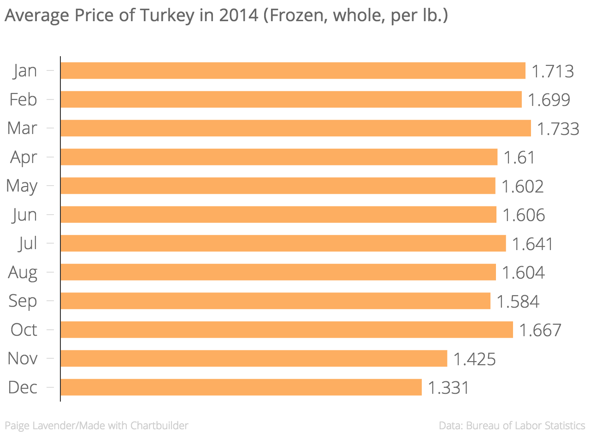
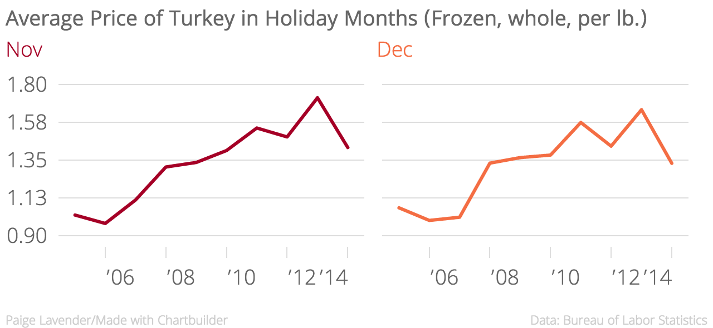
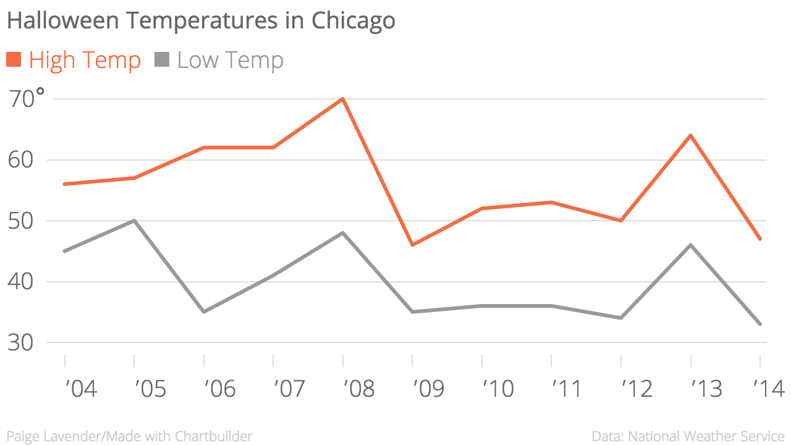
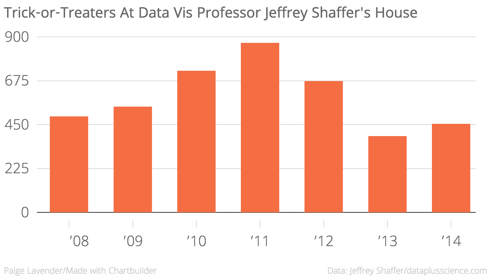

Alternative To Map:

This visualization is so crazy! I definitely prefer the map for this information; someone who is looking for a restaurant with Michelin stars would likely want to be able to navigate to their area and select the data points for more information. This visualization I've created here, as an alternative to themap, shows the breakdown of the Michelin star restaurants (colored by the number of stars) by county, but there are so many counties included here that it's just not a good presentation of the information. Someone could scroll over to their county, find a restaurant and see the number of stars, but it's a lot more trouble than just looking on a map. Plus since the data points can be color-coded by number of stars, it provides even more information. This data set likely doesn't need as much detail was the election maps we read about, where an issue was that a reader glancing at an election results map may not immediately recognize any outliers. This map is pretty self-explanatory -- you see a dark green data point in Bristol, and you know that's a three-star Micheline restaurant in that area.
I'd prefer this second type of visualization if the locations in the data set weren't as widely spread out. For example, if you were looking at four regions of London (North, South, East, West) this visualization may be a lot more helpful, considering there'd only be 4 columns to look through.
Homework: